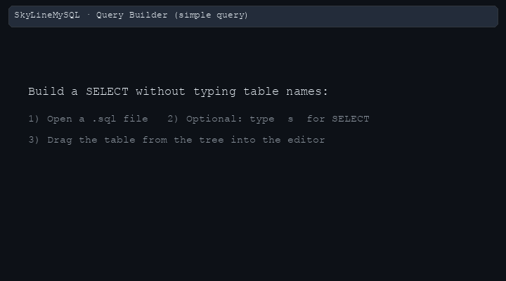

SkyLineMySQL — product guide
This single page covers Query Builder (drag-and-drop from the live connection tree, typed shortcuts before a drop);
SQL autocomplete (IntelliSense-style completions: JOIN ON lines, favorites, diagnostics, MySQL library, schema objects);
SQL with AI (natural-language lines in the editor → generated SQL via CodeLens or the AI panel);
and introduces the Query Optimizer (EXPLAIN, index recommendations, trace). For optimizer-only depth, open
query-optimizer-product-guide.html.
Use the tree on the left to jump between builder topics, SQL examples, AI prompts, autocomplete, and optimizer overview.
ON suggestions); see SQL autocomplete — overview.
SQL with AI turns tagged or plain English lines (for example starting with @ or ending with ?) into SQL via CodeLens; see SQL with AI — overview.
Query Optimizer runs live EXPLAIN, suggests indexes (with TT / join-aware reasoning), exposes an algorithm Trace, and can validate DDL in-panel; short intro: Query Optimizer — overview; full detail: query-optimizer-product-guide.html.

employees from the tree →
a typical SELECT starter line. Regenerate with
python3 scripts/gen_query_builder_demo_gif.py after editing the script (writes prod-document/animations/query-builder-simple-demo.gif). SQLLens.AI docs use productDoc/images/query-builder-landing-demo.gif.
What is the Query Builder?
It is not a separate diagram-only canvas. It lives inside the SQL editor in VS Code, next to your file and Git workflow.
- Drag a table from the sidebar connection tree into a
.sqlfile → get a sensible starting statement (often aSELECT). - Drag another table when you already have a query → the extension can propose JOIN text using foreign-key relationships it already knows from metadata.
- Drag a column → insertion depends on where your cursor sits (for example
WHEREvsSELECTvsJOIN … ON), so you spend less time fixing placement. - Shortcuts (short letters typed right before you drag) steer the kind of statement:
sfor SELECT-style patterns,ufor UPDATE,LJfor LEFT JOIN,Wfor WHERE templates, and more.
Why it is often faster than AI (for this kind of work)
AI is strong when requirements are fuzzy or exploratory. The Query Builder wins when the task is schema-coupled: correct table names, columns, and joins tied to your database.
| Topic | Query Builder (drag + tree) | Typical AI-only flow |
|---|---|---|
| Names & qualification | Objects come from the tree — no typos, no wrong catalog. | Often needs a correction pass (“wrong table”, “column does not exist”). |
| JOIN keys | Can use cached FK metadata; you pick among real paths. | May invent plausible but wrong ON clauses without perfect context. |
| Latency | Instant once you know the gesture — no round trip. | Each prompt waits on network + model. |
| Privacy | Metadata-driven; you control what runs. | Sending schema or SQL to a third party may be restricted by policy. |
| Best together | Use the builder for the skeleton and joins; use AI when you want natural-language exploration or bulk explanations — then paste results back into the editor for review. | |
Marketing-safe wording: often faster for schema-coupled queries — not “always faster than AI” in every scenario.
How you use it in VS Code (first session)
.sql file and click where you want SQL to appear.'?' with real values and run the query.For SQL autocomplete (IntelliSense, JOIN ON lines, favorites, diagnostics, MySQL library), continue to SQL autocomplete — overview in this same guide. For natural language → SQL in the editor, see SQL with AI — overview. For EXPLAIN + index recommendations, see Query Optimizer — overview or the full optimizer guide.
SQL with AI — overview
SkyLineMySQL can turn a plain-language request in a .sql file into executable SQL using your configured LLM provider.
The editor path is driven by a CodeLens link (e.g. “Generate SQL”) on the line that looks like a prompt; the extension also offers an AI Assist side panel for longer workflows.
Schema context (table/column names) can be attached automatically when a connection is active — see Settings & providers.
Companion (changelog-style notes): sql-ai-writing-product-guide.html — block-comment @AI, prompt↔SQL binding summary, and SQL autocomplete off inside comments (/* */, --, #).
SQL with AI — what counts as a prompt?
The extension does not require a magic word like @ai by itself.
Several shapes are recognized so you can pick what reads best in your notes.
Line shapes that reliably show “Generate SQL” CodeLens
| Form | Example | Notes |
|---|---|---|
Leading @ |
@ List employees hired in 2024 |
After trimming, any line that starts with @ is treated as a natural-language prompt (not only @ai). More specific prefixes like @ask: / @sql: / @generate: are handled first, then the generic @ rule. |
Line ends with ? |
Which departments have no employees? |
The trimmed line must end with ?. The intent layer always classifies that as a prompt. |
AI: / @AI: directive |
AI: "orders over $500 last month" |
Matched case-insensitively; optional quotes after the colon. Same family as @ask: in the directive detector. |
@ask: in a comment |
-- @ask: count rows per status |
Also supported with // style line comments for the @ask: prefix. |
Explicit directive prefixes (intent detector)
| Prefix | Role |
|---|---|
@ask: | Natural language → SQL (same intent family as other prompts). |
@sql: | Tagged prompt line (still NL → SQL from the model’s point of view). |
@generate: | Explicit “generate” directive. |
@ … | Fallback: any remaining line starting with @. |
Implementation reference: src/provider/codelen/aiSqlCodeLensProvider.ts (CodeLens rules),
src/service/ai/sqlGenerator/intentDetector.ts (directives and ? lines),
src/provider/parser/sqlBlockAnalyzer.ts (AI: / @AI: / @ask: directive strip).
Examples in a .sql file
-- @ask: employees in Finance with salary above department average
@sql: SELECT-style list of open tickets assigned to me
Which tables reference employees.employee_id?
AI: "create a report query: revenue by region for Q3"SQL with AI — CodeLens and commands
With AI enabled in settings, put the caret on a prompt line: a CodeLens such as “Generate SQL” appears above that line. Click it to call the generator; the extension replaces the prompt range with a SQL comment of your request plus the model’s SQL (exact behavior follows the registered command, e.g. insert vs replace variants).
- Command Palette — search for SkyLine / MySQL AI commands, for example
mysql.ai.generateSql,mysql.ai.generateSqlReplace,mysql.ai.generateSqlWithProvider, or openmysql.ai.openAiPanelfor the webview assist UI. - Inside an existing SQL statement — CodeLens is suppressed so you are not offered “Generate SQL” in the middle of a
SELECTlist orWHEREclause; move the caret to a blank or prompt line outside the block. - Selected text — If you select text that looks like natural language (not valid SQL), the same CodeLens can appear at the selection’s start line.
SQL with AI — settings and providers
- Master switch —
skyline-mysql.ai.enabledmust be on or CodeLens generation is hidden. - Providers & keys — Configure OpenAI, Anthropic, Groq, Grok, Ollama, OpenRouter, or custom endpoints under
skyline-mysql.ai.*in Settings; use the “AI Settings” / API key commands when prompted. - Schema in prompts — Options such as
skyline-mysql.ai.includeSchemaContextandskyline-mysql.ai.schemaContextModecontrol how much structural metadata is sent with your line (row data is not sent as part of this path). - Cloud entitlements — Some flows check Skyline sign-in / plan before calling the model; if blocked, follow the message to sign in or upgrade.
All keyboard shortcuts (reference)
Type the shortcut as the end of the current line in the SQL editor, then drag a table or column from the connection tree. What gets inserted depends on the shortcut and whether you drop a table or column (column drops are clause-aware: cursor in WHERE vs SELECT vs JOIN … ON changes the fragment).
DESCRIBE (table shape), while descending sort uses od (ORDER BY … DESC), not DESC alone.
The table below mirrors the pattern surface in SkyLineMySQL src/service/dragDrop/sqlContextAnalyzer.ts (SQL_PATTERNS). WITH (CTE) and UNION are not separate shortcut tokens—you type those keywords, then keep using drag-and-drop inside each branch.
Core DML
| Type before drag | Operation | Example |
|---|---|---|
s, se, sel, sc, select … | SELECT starter | Type s on a blank line → drag employees → you get a SELECT template against that table; add columns by dragging into the SELECT list. |
i, in, ins, insert … | INSERT starter | Type ins → drag departments → column list / VALUES skeleton you can fill. |
u, up, upd, update … | UPDATE starter | Type u → drag employees → UPDATE … SET pattern; drag columns into SET or WHERE with cursor placed there. |
d, de, del, delete … | DELETE starter | Type del → drag titles → DELETE FROM … WHERE style template (review before run). |
r, re, rep, replace … | REPLACE (MySQL) | Type rep → drag table → REPLACE INTO starter. |
iod, iodu, insert on duplicate … | INSERT … ON DUPLICATE KEY | Type iodu → drag table → upsert-style template. |
tr, trunc, truncate, or t | TRUNCATE TABLE | Type truncate → drag employees (use only on disposable sandboxes). |
sec | SELECT column mode | For column-focused SELECT behavior when dragging columns (see extension). |
upk, update … by key | UPDATE BY KEY pattern | Type upk after partial UPDATE … BY KEY phrase per pattern → drag table to align with keyed update flows. |
JOIN types
| Type before drag | Operation | Example |
|---|---|---|
ij, inner, inner join | INNER JOIN | With a SELECT already in the editor, type ij → drag salaries → join clause toward employees using FK metadata when available. |
lj, left, left join … | LEFT [OUTER] JOIN | Type lj → drag departments after dept_emp is in the query → keep all employees even without a match. |
rj, right, right join … | RIGHT [OUTER] JOIN | Type rj → drag fact table → useful when dimension is driver. |
fj, full, full join … | FULL OUTER JOIN | Type fj → drag second table. MySQL has no native FULL OUTER JOIN—for real MySQL demos, prefer two LEFT JOINs unioned or a conditional pattern; use this row to show cross-dialect intent only. |
cj, cross, cross join | CROSS JOIN | Type cj → drag table → Cartesian pattern (always add predicates carefully). |
WHERE, ORDER BY, GROUP BY, HAVING, aggregates
| Type before drag | Operation | Example |
|---|---|---|
w, where … | WHERE template | Put cursor in a WHERE idea, type w → drag employees.gender → predicate fragment such as AND gender = '?' (exact shape depends on context). |
wl, wlike | WHERE LIKE | Type wl → drag last_name → LIKE '%?%'-style template. |
wi, win | WHERE IN | Type win → drag column → IN (?,?,?) style list starter. |
wb, wbet | WHERE BETWEEN | Type wb → drag salary → between-range template. |
wn, wnull | IS NULL | Type wn → drag nullable column. |
wnn, wnotnull | IS NOT NULL | Type wnn → drag column. |
o, oa, order, order by | ORDER BY (ascending) | Type o → drag hire_date into an ORDER BY position. |
od | ORDER BY DESC | Type od → drag salary → descending sort fragment. |
g, gb, group by | GROUP BY | Type g → drag dept_name (via table.column) for report grouping. |
h, hav, having | HAVING | Type h → drag aggregate or alias column reference. |
cnt, count | COUNT(…) | Type cnt → drag column → COUNT(col) style. |
cntd, countd | COUNT(DISTINCT …) | Type cntd → drag emp_no for distinct headcount patterns. |
sum, avg, max, min | Aggregate wrapper | Type avg → drag salary inside a grouped query. |
DDL — tables, indexes, database
| Type before drag | Operation | Example |
|---|---|---|
c, cr, cre, create, create table … | CREATE TABLE | Type c → drag employees as naming seed / template (then edit DDL by hand). |
a, al, alt, alter table … | ALTER TABLE | Type a → drag table → alter starter. |
dr, drop, drop table … | DROP TABLE | Type drop → drag table (sandbox only). |
ci, cri, create index … | CREATE INDEX | Type ci → drag table → index DDL starter on that object. |
di, dri, drop index … | DROP INDEX | Type di → drag table / pick index name in editor. |
cd, cdb, create database | CREATE DATABASE | Type cdb → complete name by hand or drag-less flow per product. |
ddb, drop database | DROP DATABASE | Extreme caution—sandbox only. |
use | USE database | Type use → align session DB (follow with identifier). |
ALTER fragments (after ALTER TABLE … prefix)
| Type before drag | Operation | Example |
|---|---|---|
aac, alter … add column | ADD COLUMN | After ALTER TABLE employees type aac → drag column metadata from tree if supported, else finish column definition manually. |
adc | DROP COLUMN | Same pattern with adc for drop-column DDL. |
amc | MODIFY COLUMN | amc for type changes. |
arc | RENAME COLUMN | arc for rename column clause. |
aai | ADD INDEX | aai → drag or type index columns. |
adi | DROP INDEX | adi inside ALTER TABLE context. |
Metadata & analysis
| Type before drag | Operation | Example |
|---|---|---|
sct, show create table | SHOW CREATE TABLE | Type sct → drag salaries → instant DDL peek for demos. |
desc, dsc, describe | DESCRIBE | Type desc → drag employees → column list in result grid after run. |
si, sit, show index | SHOW INDEX | Type si → drag table → index report query. |
sdb, show databases | SHOW DATABASES | Inventory servers during onboarding. |
st, show tables | SHOW TABLES | List tables in current schema. |
exp, explain | EXPLAIN | Type exp → paste or build following SELECT then run plan analysis. |
Maintenance & transactions
| Type before drag | Operation | Example |
|---|---|---|
opt, optimize … | OPTIMIZE TABLE | Type opt → drag large table name for maintenance demos. |
anl, analyze … | ANALYZE TABLE | After bulk load on sandbox, analyze → drag salaries. |
rpr, repair … | REPAIR TABLE | MyISAM-era demos; know your engine before running. |
chk, check … | CHECK TABLE | Integrity check teaching moment. |
b, beg, begin, start transaction | BEGIN / START TRANSACTION | Type b at line start → wrap multi-statement demos. |
com, commit | COMMIT | Close transaction block in scripts. |
rb, rollback | ROLLBACK | Undo sandbox changes. |
call | CALL procedure | Type call then procedure name and args by hand. |
Example: simple SELECT
Goal: list ten employees with name and hire date.
With the builder: drag employees on an empty line (or after s), then drag columns into the SELECT list if needed, and add LIMIT 10.
SELECT
emp_no,
first_name,
last_name,
hire_date
FROM
employees.employees
ORDER BY
hire_date DESC
LIMIT 10;Example: DML (INSERT, UPDATE, DELETE)
Shortcuts like i / ins (INSERT), u (UPDATE), d / del (DELETE) plus a table drag give you a starting template. Always review before running against production.
INSERT (pattern)
INSERT INTO employees.departments (
dept_no,
dept_name
)
VALUES (
'd010',
'AI Research'
);UPDATE (pattern)
UPDATE
employees.employees
SET
first_name = 'Ann'
WHERE
emp_no = 10001;DELETE (pattern)
DELETE FROM
employees.departments
WHERE
dept_no = 'd010';Examples use the employees sample schema; adjust table names if your database name differs.
Example: complex joins
Goal: current department name for each employee row (current assignment uses to_date = '9999-01-01' in the sample data).
With the builder: start from employees, drag dept_emp, then departments, and let JOIN suggestions align emp_no and dept_no; refine predicates in WHERE.
SELECT
e.emp_no,
e.first_name,
e.last_name,
d.dept_name
FROM
employees.employees AS e
INNER JOIN employees.dept_emp AS de ON de.emp_no = e.emp_no
AND de.to_date = '9999-01-01'
INNER JOIN employees.departments AS d ON d.dept_no = de.dept_no
WHERE
e.last_name LIKE 'K%'
ORDER BY
d.dept_name,
e.last_name
LIMIT 50;Another join pattern (salary + department)
SELECT
d.dept_name,
ROUND(AVG(s.salary), 2) AS avg_salary
FROM
employees.salaries AS s
INNER JOIN employees.employees AS e ON e.emp_no = s.emp_no
INNER JOIN employees.dept_emp AS de ON de.emp_no = e.emp_no
AND de.to_date = '9999-01-01'
INNER JOIN employees.departments AS d ON d.dept_no = de.dept_no
WHERE
s.to_date = '9999-01-01'
GROUP BY
d.dept_name
ORDER BY
avg_salary DESC;Example: subqueries
Goal: employees whose current salary is above the company-wide current average. The inner query is a natural place to type or paste after the builder gives you the outer joins.
SELECT
e.first_name,
e.last_name,
s.salary
FROM
employees.employees AS e
INNER JOIN employees.salaries AS s ON s.emp_no = e.emp_no
AND s.to_date = '9999-01-01'
WHERE
s.salary > (
SELECT AVG(s2.salary)
FROM employees.salaries AS s2
WHERE s2.to_date = '9999-01-01'
)
ORDER BY
s.salary DESC
LIMIT 25;The builder accelerates the outer shape (tables + joins + column lists); nested scalar subqueries are still easiest to finish by hand or with AI assist — then validate in the editor.
Advanced patterns: CTE, UNION, EXISTS + multi-join
These patterns are real MySQL you can demo on the employees database. There is no single-letter shortcut for WITH or UNION: type the keywords, use the builder for each inner SELECT (tables + joins + column drags), then glue clauses together.
Example A — CTE + join + filter (salary above department average)
Idea: first compute each department’s average current salary in a named result (dept_avg), then join back to employees and current salaries and keep only rows above that average. Good demo of readability: the CTE names the intermediate story.
Builder workflow: type WITH dept_avg AS ( and newline; inside the CTE, use s + table drags to build the inner SELECT … JOIN … GROUP BY; close the CTE, start the outer s + drags for employees, salaries, dept_emp, departments, then join to dept_avg.
WITH dept_avg AS (
SELECT
de.dept_no,
ROUND(AVG(s.salary), 2) AS avg_salary
FROM
employees.salaries AS s
INNER JOIN employees.employees AS e ON e.emp_no = s.emp_no
INNER JOIN employees.dept_emp AS de ON de.emp_no = e.emp_no
AND de.to_date = '9999-01-01'
WHERE
s.to_date = '9999-01-01'
GROUP BY
de.dept_no
)
SELECT
e.emp_no,
e.first_name,
e.last_name,
d.dept_name,
s.salary,
da.avg_salary
FROM
employees.employees AS e
INNER JOIN employees.salaries AS s ON s.emp_no = e.emp_no
AND s.to_date = '9999-01-01'
INNER JOIN employees.dept_emp AS de ON de.emp_no = e.emp_no
AND de.to_date = '9999-01-01'
INNER JOIN employees.departments AS d ON d.dept_no = de.dept_no
INNER JOIN dept_avg AS da ON da.dept_no = de.dept_no
WHERE
s.salary > da.avg_salary
ORDER BY
s.salary DESC
LIMIT 40;Example B — UNION (shape two cohorts with the same columns)
Idea: first branch returns a few arbitrary employees as a cohort label 'sample_staff'; second branch returns current department managers with label 'manager'. Both branches must return the same column count and compatible types.
Builder workflow: build the first SELECT entirely with drags; type UNION on a new line; build the second SELECT with lj / table drags from dept_manager to employees.
SELECT
'sample_staff' AS cohort,
first_name,
last_name
FROM
employees.employees
WHERE
gender = 'M'
LIMIT 5
UNION
SELECT
'manager' AS cohort,
e.first_name,
e.last_name
FROM
employees.dept_manager AS dm
INNER JOIN employees.employees AS e ON e.emp_no = dm.emp_no
WHERE
dm.to_date = '9999-01-01'
LIMIT 5;Example C — UNION ALL + derived counts (avoid deduplication cost)
Idea: stack two counting queries when you know rows cannot overlap—UNION ALL is cheaper than UNION because it does not deduplicate.
SELECT
'titles_rows' AS metric,
COUNT(*) AS n
FROM
employees.titles
WHERE
to_date = '9999-01-01'
UNION ALL
SELECT
'salaries_rows',
COUNT(*)
FROM
employees.salaries
WHERE
to_date = '9999-01-01';Example D — EXISTS correlated subquery (any current “Engineer” title)
Idea: keep employees who have at least one current title row matching a pattern. EXISTS stops at first match—good teaching vs IN (SELECT …).
Builder workflow: type s → drag employees; type WHERE EXISTS ( and newline; inside, s + drag titles and add correlation t.emp_no = e.emp_no by hand or column drag in WHERE.
SELECT
e.emp_no,
e.first_name,
e.last_name
FROM
employees.employees AS e
WHERE
EXISTS (
SELECT 1
FROM employees.titles AS t
WHERE t.emp_no = e.emp_no
AND t.to_date = '9999-01-01'
AND t.title LIKE '%Engineer%'
)
ORDER BY
e.emp_no
LIMIT 50;Example E — Join + scalar subquery + CTE in one report (heavy demo)
Idea: CTE materializes “current salary per employee”; outer query joins department and compares each salary to a scalar subquery (company max). Mixes everything in one script for advanced audiences.
WITH cur_sal AS (
SELECT
emp_no,
salary
FROM
employees.salaries
WHERE
to_date = '9999-01-01'
)
SELECT
d.dept_name,
e.last_name,
cs.salary,
ROUND(100 * cs.salary / (SELECT MAX(salary) FROM cur_sal), 2) AS pct_of_company_max
FROM
cur_sal AS cs
INNER JOIN employees.employees AS e ON e.emp_no = cs.emp_no
INNER JOIN employees.dept_emp AS de ON de.emp_no = e.emp_no
AND de.to_date = '9999-01-01'
INNER JOIN employees.departments AS d ON d.dept_no = de.dept_no
ORDER BY
pct_of_company_max DESC,
d.dept_name,
e.last_name
LIMIT 30;Sample database for practice
The official employees database (Giuseppe Maxia / datacharmer test_db) is ideal for demos: large salaries and titles history, dept_emp bridge, and small dimension tables.
Restore from the repo script (MySQL 9.x client needs --commands; the script handles that):
cd /path/to/SKYLINEMYSQL
./scripts/restore_mysql_employees_sample.shVerify row scale (expect on the order of 300,000 rows):
SELECT
COUNT(*) AS employee_rows
FROM
employees.employees;Day-of demo checklist
-
Confirm connection and database — lightweight probe, then row count on
employees:SELECT 1; SELECT COUNT(*) AS employee_rows FROM employees.employees; - Expand the tree so the audience sees real table breadth.
- Flash the shortcut reference so people remember s / lj / w as vocabulary.
- Show one simple SELECT built by drag, then one multi-join example.
- Optional power moment: open CTE / UNION and narrate “keywords typed, shapes built by drag.”
- If a JOIN disambiguation dialog appears, explain it as a safety feature (explicit choice over a silent wrong join).
- Close with “builder for speed + schema truth; AI when the requirement is still words, not tables.”
Query Optimizer — overview
Use the Query Optimizer Workbench when you already have executable SQL and need EXPLAIN-backed diagnosis, heuristic rewrites,
actionable index DDL (primary vs optional alternatives), an easy-to-read algorithm trace for TT/index decisions,
and optional before/after validation after creating an index — all scoped to your live MySQL connection.
Open it from VS Code
- Command Palette → Optimize Query (Visual Explain) — analyzes the current SQL editor buffer or selection.
- Command Palette → variations for Optimize All Queries with Index Recommendations (plus a debug flavor for verbose pipelines).
- Query result panel and Slow Query / performance flows can pass SQL into the same workbench when MySQL is the active connection.
What you get in the panel
- Overview — recommendations block with impact/confidence and optional vs primary indexes; rewriter tips inline where relevant.
- Explain — traditional rows; switches to visual, TREE, or JSON variants from the toolbar.
- Rewrites / Tips — dedicated tab for query-level suggestions.
- Trace — human-readable breakdown (clauses → join edges → TT → scoring → picks). Use Refresh Trace after Analyze.
- Create Index / Copy DDL — isolated DDL execution, optional profiler-backed validation paths, bulk create with unchecked optional indexes by default.
- Optional AI recommendations — where enabled, alternate index ideas alongside the rule-based engine.
Settings worth knowing
| Setting | Notes |
|---|---|
skyline-mysql.queryOptimizerVerboseIndexLog |
Full index pipeline dumps to the MySQL output channel after Analyze. |
skyline-mysql.queryOptimizer.disableVisualExplain |
Turn off visual explain if rendering is unstable. |
Premium: workbench entry is guarded by entitlement qo in the extension; parity with other premium SQL features.
SQL autocomplete — overview
This page documents IntelliSense-style SQL completions in SkyLineMySQL for .sql files in VS Code: tables, columns, JOIN ON lines, favorites, diagnostics, and a large MySQL command library — all tied to your live connection metadata.
It lives in this same guide as the Query Builder chapter above, which focuses on drag-and-drop and typed shortcuts before a drop.
Connection, active database, and per-file scope
Every completion list is built from metadata for the current MySQL session context: the connection attached to your SQL editor tab and the database that tab is scoped to (tree “Active” badge and per-file database selection should agree). If you connect successfully but the wrong schema is selected, you will still see valid suggestions — for the wrong catalog — which feels like a bug even though the pipeline is behaving correctly.
- Fix first: pick the intended database in the tree (or per-file selector) so object names match what you expect in
FROM/JOIN. - Offline / no connection: schema-heavy rows (tables, columns, JOIN catalog) shrink or disappear; keyword-only rows may still appear.
- Large schemas: some join-discovery paths cap how many tables are scanned so the editor stays responsive; prefer qualifying with known tables when demoing huge catalogs.
How you invoke and filter completions
SkyLineMySQL registers a completion provider for SQL documents. VS Code merges the extension’s items with any built-in behavior according to your user/workspace settings (Quick Suggestions, suggest on trigger characters, delay, etc.).
- Implicit — keep typing; when the list opens, arrow keys and Enter accept a row.
- Explicit — Ctrl+Space (macOS may use ⌃+Space or ⌘+Space per your keymap) forces the widget at the caret.
- Filtering — additional characters refine the list; categories in the label/description help distinguish tables, columns, saved SQL, diagnostics, and keywords.
- Snippets — some accepts insert multi-line templates; use Tab to jump placeholders per normal VS Code snippet behavior.
- Inside comments — Skyline’s SQL completion provider returns no items when the caret is inside a block comment (
/* … */), a--line comment, or a MySQL#line comment (string/backtick literals are respected). See SQL with AI — product notes.
Autocomplete vs Query Builder (same extension, different gestures)
| Topic | SQL autocomplete | Query Builder (drag + shortcuts) |
|---|---|---|
| Primary gesture | Type; pick from the completion list. | Type optional shortcut token; drag table/column from the tree. |
| Best for | Fine names, JOIN ON lines, library SQL, keywords. |
Large statement skeletons, clause placement, multi-table inserts from schema. |
| Overlap | Shortcut tokens can appear as completion hints. | Same tokens are meant to be followed by a drag for the full template. |
| Teach together | Narrate: “tree for truth of shape; list for speed of spelling and predicates.” Point to first-session steps for the builder. | |
Completion provider chain (order matters)
The extension walks an ordered chain of small providers. Earlier chains run first; their items are merged with later ones. Specialized rows (joins, favorites) can therefore appear before generic schema rows. Certain library categories are deduplicated by display name so two sources do not spam the same title.
| Order | Source (product) | Role |
|---|---|---|
| 1 | Drag-drop shortcut hints | Reminds typable tokens that pair with tree drags. |
| 2 | Table alias suggest | AS alias after FROM/JOIN table. |
| 3 | JOIN patterns / ON | Cached patterns, FK/catalog edges, matcher — flagship feature. |
| 4 | Favorites | User-starred saved SQL. |
| 5 | Frequent / recent | Executed-query reuse. |
| 6 | Diagnostic queries | Curated health / performance templates. |
| 7 | MySQL commands | Pre-built catalog snippets. |
| 8 | Favorite commands library | 800+ version-aware entries. |
| 9 | INSERT columns | Column names inside INSERT INTO … (. |
| 10+ | DDL, DML, tables, alias columns, join-aware columns, columns, detector, keywords | Classic schema + SQL keyword coverage. |
Implementation reference for engineering: src/provider/complete/completionProvider.ts (completeChain()).
How the completion list is built (merge algorithm)
When you open the suggest widget, SkyLineMySQL does not run a single monolithic query against the schema. It runs a pipeline:
ordered providers produce items, then the extension merges, deduplicates, sorts, and re-ranks so the list stays fast and readable.
The code path is CompletionProvider.provideCompletionItems in src/provider/complete/completionProvider.ts.
1. Run each chain in order
Chains run sequentially (see provider chain). Each chain returns zero or more CompletionItems. A chain may set stop so later chains are skipped for that request (for example JOIN ON body mode returns condition-only rows and stops).
Actual order in code: drag-drop shortcut hints → table-alias suggestions → JOIN / ON → favorites → frequent/recent → diagnostics → MySQL commands → favorite-command library → INSERT columns → DDL → DML → tables → alias columns → join-aware columns → plain columns → table detector → keywords.
2. Split “library-like” vs schema-like items
Items from these chains are collected into a deduplicable bucket: favorites, frequent/recent reuse, diagnostic templates, MySQL commands, and the large favorite-command library. Items from the other chains (JOIN patterns, aliases, DDL/DML, tables, columns, keywords, …) go into a non-deduplicated bucket so you still get many distinct table and column names even when labels look similar.
3. Deduplicate by display name + category priority
For deduplicable rows only, the extension groups by a normalized display label (leading emoji / icon prefixes are stripped). If two rows share the same display title, one wins based on category priority — lower number beats higher number. This is why a starred User Favorite can replace a generic library row with the same visible title.
| Priority (low = wins) | Category (examples) |
|---|---|
| 1 | User Favorite / ⭐ User Favorite |
| 2–3 | Frequent / ⚡ Frequent, then Recent / 🕐 Recent |
| 4–5 | Library / Performance / Schema / Locks / … (curated buckets) |
| 10 | Broad “All” / catch-all library categories |
4. Sort, merge, then clause-boost
Deduplicated items are sorted by each item’s sortText (favorites and reuse queries set explicit prefixes so your own queries float predictably). Then the list becomes: sorted deduplicated library-like rows first, followed by all schema / JOIN / keyword rows.
Finally, clause-aware boosting inspects where the caret sits (for example FROM / JOIN / INTO vs SELECT / WHERE / ON): table-shaped completions are promoted in table contexts; column-shaped completions are promoted in column contexts.
5. Extra ordering in pure “table list” spots
When the caret is in a spot that is clearly choosing a relation target (after FROM / JOIN / INTO, etc.), table- and column-like items are sorted together at the head of the list; other completion kinds are pushed to a tail band so the widget reads like a schema picker first.
Drag-drop & shortcut hints in the list
Tokens such as IN, SE, LJ, or spelled-out join words can appear as completion items. They exist to reinforce the shortcut vocabulary documented in the Query Builder shortcuts table.
Accepting a hint only inserts text. The full builder flow still expects a drag from the connection tree when the shortcut system was designed around drag. Use this section in demos to bridge “what can I type?” and “what do I drag next?”.
Table alias suggestions
After FROM or JOIN and a concrete table reference, the extension proposes readable AS <alias> forms. Aliases try to avoid collisions with identifiers already present in the statement.
Demo tip: accept an alias early in a long reporting query so later column completions and JOIN ON lines stay short and human-readable.
JOIN targets & ON conditions (deep dive)
This is SkyLineMySQL’s most differentiated autocomplete surface. The caret’s position in the partial statement selects among several modes:
- Pending JOIN — you are mid-keyword or choosing the next table; accepts can expand to a full
[INNER|LEFT|…] JOIN qualified.table ON …snippet. - After joined table, before
ON— insertsON …plus a condition. - Inside
ONbody — inserts only the predicate (no duplicateONkeyword).
Evidence blended into each list:
- Learned / cached patterns — frequency counts; refreshed when the database tree is refreshed so merged FK snapshots stay current.
- Schema catalog — edges from
INFORMATION_SCHEMA(foreign keys, same-name column bridges, learned merges). - Matcher — column-metadata comparisons with confidence and explanation text; very low scores are dropped to reduce false joins.
On sample databases such as employees, optional bridge paths (e.g. via dept_emp) may appear when settings allow — good moment to explain “multiple valid joins; pick the business truth.” Practice SQL shapes live in Complex joins.
Algorithm (how ON lines are generated)
Implementation lives in src/provider/complete/chain/joinPatternChain.ts, backed by JoinPatternCache (src/service/dragDrop/joinPatternCache.ts), JoinSchemaCatalogService, and JoinConditionMatcher. At a high level:
- Detect context from tokens + caret — The chain classifies the request as: partial JOIN keyword (e.g. you typed
lef), “pick next table after JOIN”, “after table, beforeON”, or “already insideON”.NATURAL/CROSSpaths skipONsuggestions because they do not use anONclause. - Resolve tables in scope — Tables already referenced in the
FROM/JOINclause (with aliases) constrain which new table orONpredicate makes sense. - Pull candidate edges — (a) Cached join patterns persist successful joins (FK-derived, user-confirmed, or learned) with usage counts and confidence; (b) the schema catalog proposes FK and name-bridge edges; (c) the matcher compares column metadata between tables and assigns a confidence score.
- Threshold and cap — Matcher rows below about 24% confidence are dropped. When you are still picking a table right after
JOIN, the product caps how many tables it scans and how many items it returns (keeps the editor responsive on huge schemas). - Shape the insert — Depending on mode, accepting an item may replace a partial join keyword and insert a full
… JOIN … ON …line, insert onlyON …after the table, or insert only the predicate after you have already typedON. Pending-join completions may appendAS <alias>when the implementation chooses a short alias that does not collide with names already in the statement. - Stop after rich
ONbody — When you are inside theONbody and the chain returns condition-only items, the provider can stop the chain early so generic keyword noise does not drown the join UI.
employees sample DB: an optional dept_emp IN/EXISTS “bridge” between employees and departments is off by default; enable with workspace setting skyline-mysql.joinCompletions.showDeptEmpSubqueryBridge. For deep diagnostics of join suggestions, developers can set skyline-mysql.debugJoinPatternCompletions to true (logs to the Debug Console in F5).
Favorites & frequent / recent queries
Favorites surface starred statements for one-click reuse — ideal for standard runbooks. Frequent and recent buckets help operators return to “the query I always run after deploy.” Both are first-class inputs to the merge / dedupe pipeline.
These sources participate in deduplication against other library-like rows so identical titles do not repeat. Teach customers that starring a canonical query makes it dominate duplicates in the list (category priority favors ⭐ User Favorite).
Favorites — what you see and how matching works
Code: src/provider/complete/chain/favoritesChain.ts plus FavoritesManager (src/service/common/favoritesManager.ts).
- When suggestions appear — Mostly at the start of a statement (blank line, beginning of line, right after
;), or while you are still in the first few tokens / early SQL keywords (so typingshow procan surface a “SHOW PROCESSLIST” favorite). Favorites are suppressed in spots that are clearly choosing a table afterFROM/JOIN/INTOso they do not collide with schema picks. - Scope — Favorites are loaded for the current connection id and can include global favorites. Pre-seeded global library commands with zero usage are intentionally hidden from autocomplete (they remain available in the Favorites UI) to reduce list noise.
- Labels in the widget — Each row shows the favorite’s primary name. The description column reads
⭐ User Favoritefor items you actually use (or any non-global favorite), and★ Libraryfor catalog-backed entries that are still eligible. - Matching — Filtering is case-insensitive and considers: primary name, all shortcut strings you configured, and (for normal SQL, not templated bodies) a prefix of the SQL text itself — so fragments of the statement can surface the right row.
- Accept behavior — Items are usually snippets. When a replace range is computed, accepting a favorite can replace the whole typed prefix on the line with the full stored SQL in one action.
- Ordering —
sortTexttiers prefer user favorites, then well-used library items, then others. Queries that contain{{ … }}template placeholders are deprioritized (and their filter text avoids matching bareSELECTso they do not flood the list). - Documentation popup — Hover/detail shows optional description, shortcut list, usage count when tracked, and a fenced SQL preview of the stored text.
Reusing old queries (frequent & recent)
Code: src/provider/complete/chain/frequentQueriesChain.ts and queryTemplateManager (src/service/common/queryTemplateManager.ts). Execution history is tracked per connection id so reuse stays tied to the profile you are working against.
- Automatic, not manual — Unlike favorites, you do not star these. The extension records templates from queries you actually run (execution count and last-run time).
- What gets offered — Up to 15 top templates by frequency (minimum one execution), excluding anything already marked as a favorite; plus up to 5 recent templates that are not in that frequent set. The UI then keeps at most 10 frequent and 5 recent completions after filtering to what matches what you typed.
- When suggestions appear — At statement start, after
;, on an empty line, or while the statement still has few tokens (earlySELECT … FROMtyping). This keeps “whole query reuse” from interrupting mid-predicate editing. - How filtering works — The chain compares your current partial SQL (lower-cased) to each template: it keeps rows whose saved SQL starts with what you typed, or whose text contains the current word token. That lets a half-typed
SELECT * FROM employeesnarrow the list to templates with the same opening. - Labels — Rows show a short label derived from query type and detected tables (for example
SELECT employees, departments). The description shows⚡ Frequent (Nx)or🕐 Recent (Mx)with execution count. - Detail popup — Markdown documentation lists execution count, last-run timestamp, and the full SQL body so operators can confirm before accepting.
- Accept — Inserts the full stored SQL for that template. Product metering tags this path separately from generic autocomplete so “reuse” can be measured honestly.
Built-in diagnostic queries
A curated catalog of diagnostic SQL (performance, locks, replication, space, etc.) ships with the extension. Each item is labeled so it is obvious this is template SQL, not arbitrary text generation.
Always read cost and scope before running on production. Position diagnostics as “editable templates — start safe, add WHERE limits.”
MySQL command library (800+)
A searchable, version-filtered library of MySQL/MariaDB statements spans maintenance, users, optimizer, replication, and more. Categories (performance, schema, …) align with how DBAs browse problems.
This is not LLM output — it is deterministic text vetted for structure. Pair with your story on compliance: “no cloud model required for these snippets.”
INSERT column lists
When the parser recognizes INSERT INTO … (, completions offer real column names for that table from metadata. This reduces typos in migrations and seed scripts.
Schema objects, DDL/DML, join-aware columns, keywords
The baseline layer covers everyday editing:
- Tables & views after relation keywords.
- Columns with qualification when the statement scope allows.
- Join-aware ranking — when multiple tables are in play, column ordering favors likely matches for the current clause.
- DDL/DML fragments appropriate to
ALTER,CREATE,UPDATE, etc. - SQL keywords for finishing syntax (
WHERE,GROUP BY,LIMIT, …).
List ordering & clause-aware boosting
In table clause positions (FROM, JOIN, INTO targets), table-like items are boosted ahead of long-tail text. In column clause positions (SELECT, WHERE, ON, ORDER BY, …), column-like items are boosted.
If a user asks “why isn’t my table first?”, verify they are not inside a string/comment, verify active DB, then explain dedupe + stable sort keys for library rows.
Accepting a suggestion & product telemetry
When you commit a completion, the inserted text may be a plain token or a multi-line snippet. For product analytics (when enabled), Skyline records which class of completion fired — e.g. JOIN ON accepts are separated from generic SQL autocomplete so “time saved” modeling stays honest.
Privacy: these counters do not include your SQL buffer contents as part of that usage event. Enterprise customers can disable usage telemetry per Skyline policy.
Troubleshooting (talk track)
- Empty or tiny list — check connection; confirm file language mode is SQL; try explicit Ctrl+Space.
- Wrong tables — wrong active database or stale tree; refresh tree / reselect DB.
- No JOIN rows — metadata not loaded, catalog disabled, or caret not in a JOIN context; move caret after
JOIN/ table token. - Duplicates disappeared — dedupe by design for library categories.
- No favorites in autocomplete — you may be mid-statement (not at line/statement start), or in a FROM/JOIN table spot where favorites are suppressed; or the row is a pre-seeded global command with zero usage (open the Favorites UI instead).
- No frequent/recent rows — nothing recorded yet for this connection, or you are past the first few tokens of the statement; run a query once, then invoke completions near the start of the next statement.